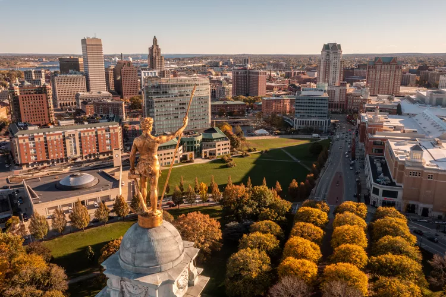

Explore the best of a quaint New England town with the amenities and hip sophistication of a big city
Welcome to Providence, Rhode Island, where history, culture, and innovation converge to create an unforgettable experience. Nestled along the picturesque shores of Narragansett Bay, Providence is a vibrant city brimming with charm and character. From its rich colonial heritage to its thriving arts scene and culinary delights, there's something for everyone to explore and enjoy in this dynamic city. Join us as we embark on a journey through Providence's historic landmarks, eclectic neighborhoods, and renowned institutions, discovering the unique spirit and allure that make this city a gem of New England. We pack a lot of incredible experiences into a state that’s only 37 miles wide and 48 miles long!
